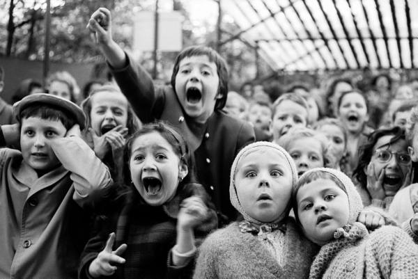

CoffeeScript - JavaScript without the... Java.
TD;LR
- JavaScript, bare... without the cruft.
- Kompilerer ned til JavaScript
- Med en kompilator skrevet i CoffeeScript
- Er fullstendig jslint compliant
- Fikser småfeil og mangler i JavaScript
We want code!!

Signifikante innrykk
if got_more_beer()
drink_beer()
else
buy_beer()
IT-hipster funksjonssyntax
add_prices = (a, b) -> a + b
Fikser scoping
accidentally_global = 'woops, I leaked'
window.global = "eksplisitt leak!"
Ikke så hjernedød equals
if (2 == '2') then alert("fail");
Implisitt return
drink_beer = (beer) ->
other_half = drink_half(beer)
other_half
Frivillige paranteser på funksjonskall
beer =
type: 'heineken'
taste: 'abysmal'
drink beer
# Omgomgomg
myPee = pee
# Ahh...
myPee = pee()
Hyggelige kortformer
if syttendeMai() then alert "hurra!" else alert "nei, faen..."
Kan løkke begge veier
while numberOfBeers > 0
numberOfBeers--
until numberOfBeers is 0
numberOfBeers--
Alt kan suffixes
drink_beer() if numberOfBeers > 0
Alt er uttrykk!
beer_history = until numberOfBeers is 0
numberOfBeers--
ALT er uttrykk!
beer_text = switch remainingBeers
when remainingBeers > 10 then "All is well!"
when remainingBeers > 5 then "Maybe someone should..."
when remainingBeers > 2 then "Not cool."
when remainingBeers > 0 then "PANIC"
Sammenlikning flere veier!
beer_text = switch remainingBeers
when 5 < remainingBeers < 10 then "WOO! FEST!"
when 1 < remainingBeers < 5 then "Nachspiel?"
when remainingBeers is 0 then "Jeg vil hjem."
Bygging av strenger
age = 10
text = "I just had #{age} beers!"
text = "I just had #{person.getBeerCount()} beers!"
Bygging av svære strenger
beer_story = """
<ul>
<li>One beer</li>
<li>Two beers</li>
<li>Three beers</li>
</ul>
"""